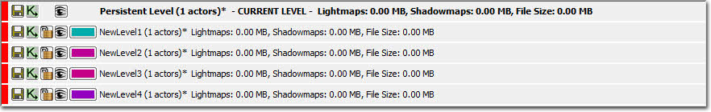
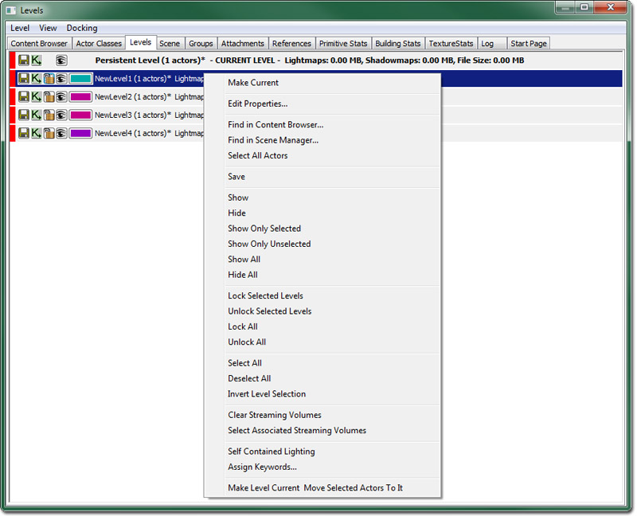
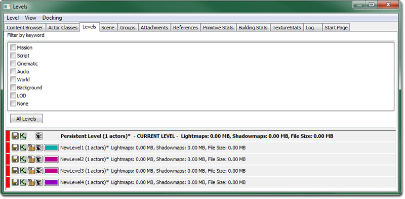
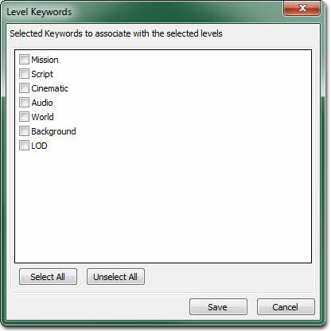

UDN
Search public documentation:
LevelBrowserReference
日本語訳
中国翻译
한국어
Interested in the Unreal Engine?
Visit the Unreal Technology site.
Looking for jobs and company info?
Check out the Epic games site.
Questions about support via UDN?
Contact the UDN Staff
中国翻译
한국어
Interested in the Unreal Engine?
Visit the Unreal Technology site.
Looking for jobs and company info?
Check out the Epic games site.
Questions about support via UDN?
Contact the UDN Staff
UE3 Home > Unreal Editor and Tools > Level Browser Reference
UE3 Home > Level Streaming > Level Browser Reference
UE3 Home > Level Streaming > Level Browser Reference
Level Browser Reference
Overview
Opening the Level Browser
Level Browser Interface
Menu Bar
Level
- New Level... - Creates a new level and adds it to the Persistent level.
- New Level From Selected Actors - Creates a new level and adds it to the Persistent level.
- Add Existing Level… - Opens a file browser and allows you to add a level that already exists to the Persistent level.
- Make Current - Set the selected Level as the Current Level.
- Update All Actors in Level Grids - Description Needed.
- Auto-Update Actors in Level Grids - Description Needed.
- Merge Levels into New Level - Consolidates all currently selected levels in the Levels Browser into one single new level.
- Remove Level from World - Remove a Level from the Persistent Level.
View
- Refresh - Refresh the Levels List.
- Find in Content Browser… - Opens the Content Browser and selects the package for the currently selected level in the levels list.
- Toggle Filter Window - Shows or hides the filter window.
- Level Memory/Size Data - Toggles the display of memory, Lightmap and Shadowmap, and file size information in the levels list.
Docking
- Docked - This option will dock a currently floating browser into the main browser window. When the current browser is docked, this option appears checked.
- Floating - This option will undock a docked browser from the main browser window causing it to become a floating browser in its own window. When the current browser is floating, this option will be checked.
- Clone Browser - This option will create a duplicate of the current browser.
- Remove Browser - This option will remove or delete the current browser. This option is only enabled on cloned browser windows.
Levels List
The Levels List shows the Persistent Level, as well as any additional Streamed Levels, and any LevelGridVolumes present in the world. The level denoted as CURRENT is the level that will be modified if changes are made in the editor windows or Kismet. Levels are displayed in the order they are added, though the streaming levels can easily be reordered by selecting a level and using the up and down arrow keys to move them in the list. Levels List Buttons
| Saves the level. This will appear disabled unless something in the level has changed marking the level as dirty, though clicking it will still perform a save operation regardless. | |
| Opens the main kismet sequence for the level. | |
| Allows you to lock or unlock streaming levels so they cannot be modified. This will keep the level from being able to be made the current level. Only available on streaming levels. | |
| Allows you to hide and unhide the levels in the editor, although this is for visualization purposes only and has no bearing on whether or not a level will stream into the game when it is run. However, a level that is not visible here will not be affected if you rebuild the level, which can be a great timesaver if you have complicated levels. | |
| Allows you to choose a color for the level. This can be helpful for organizing different types of levels by color. Only available on streaming levels. |
Context Menu
- Make Current - Make the selected Level the current Level.
- Edit Properties... - Opens the level properties editor for all selected levels.
- Find in Content Browser... - Selects (in the content browser) all packages belonging to the selected levels.
- Find in Scene Manager... - Shows the selected levels in the scene manager.
- Select All Actors - Selects all actors belonging to any level in current level selection set.
- Save - Saves all of the selected levels (Note: Only visible unlocked levels can be saved).
- Show and Hide - Makes all selected levels visible or invisible.
- Show Only Selected - Makes all selected levels visible and all other levels invisible.
- Show Only Unselected - Makes all selected levels invisible and all other levels visible.
- Show All - Makes all levels visible.
- Hide All - Makes all levels invisible.
- Lock Selected Levels - Lock all selected levels.
- Unlock Selected Levels - Unlock all selected levels.
- Lock All - Locks all levels.
- Unlock All - Unlocks all levels.
- Select All - Select all levels.
- Deselect All - Empty the level selection list.
- Invert Level Selection - Invert the level selection set.
- Clear Streaming Volumes - Clears all streaming volume associations for the currently selected levels.
- Select Associated Streaming Volumes - Selects (in the editor) all of the associated streaming volumes for the selected levels.
- Self Contained Lighting - Toggles the 'Self Contained Lighting' property for each of the selected levels.
- Assign Keywords... - Allows keywords to be associated with the currently selected levels.
- Make Level Current Move Selected Actors To It - Sets the selected level as the Current level and moves all actors selected in the viewport to that level.
Filtering
[LevelBrowser.Keywords] +Keywords=Mission +Keywords=Script +Keywords=Cinematic +Keywords=Audio +Keywords=World +Keywords=Background +Keywords=LOD Keywords can then be assigned to any streaming level. To assign keywords, select "Assign Keywords" in the context menu which will bring up a check box list dialog. To narrow the set of levels, use the "Filter by keyword" menu at the top of the level browser. 